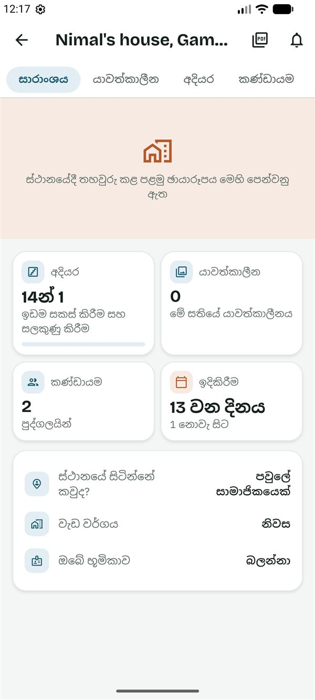
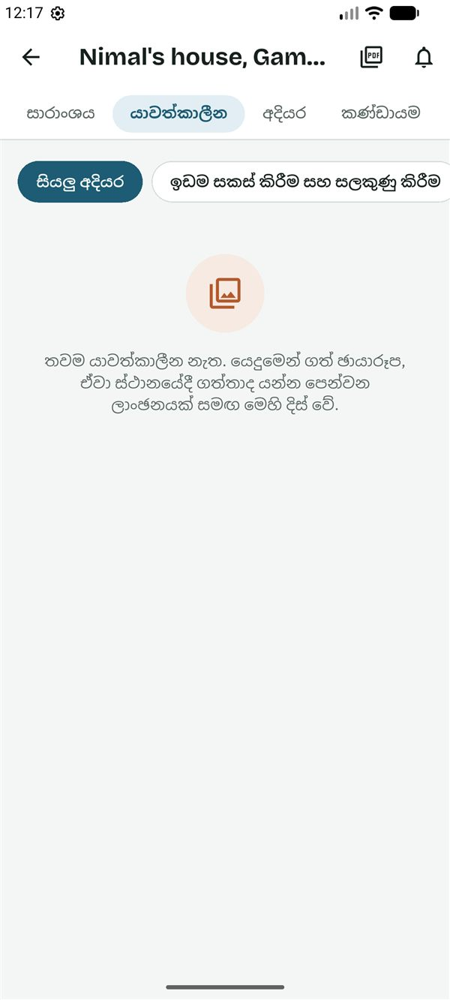
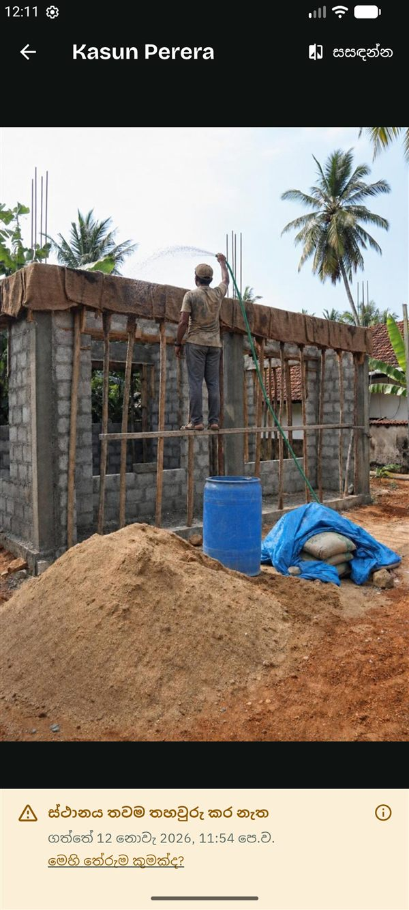

SiteProof
SiteProofමෙම සිංහල පාඨය කෙටුම්පතකි. යෙදුමේ සිංහල මෙන්ම, සිංහල මව් භාෂාව වන කෙනෙකු එය තවම සමාලෝචනය කර නැත.
This Sinhala text is a draft awaiting review by a native speaker, like the app's Sinhala.
මාර්ගෝපදේශ › බලන්නා
බලන්නන් සඳහා මාර්ගෝපදේශය
Read in English (ඉංග්රීසියෙන් කියවන්න)
මෙම මාර්ගෝපදේශය බලන්නෙකු සඳහායි: ගමේ සිටින දෙමාපියෙක් හෝ විදේශයක සිටින ඥාතියෙක් වැනි, නිවසේ ප්රගතිය බලා සිටින පවුලේ අය. ඔබට ඡායාරූප, අදියර සහ සැලසුම් පෙනේ. ඔබට කිසිවිටෙක මුදල් නොපෙනෙන අතර, ඔබ කරන්නේ කියවීම පමණි. ඔබට SiteProof නොමිලේ.
ඔබට කළ හැකි සහ කළ නොහැකි දේ
ඔබට කළ හැකි දේ
- සෑම යාවත්කාලීනයක්ම සහ ඡායාරූපයක්ම එහි ලාංඡනය සමඟ බැලීම, සහ හඬ සටහන් ඇසීම.
- අදියර, ඒවායේ දින සහ ඒවායේ අදියර පරීක්ෂා බැලීම.
- කණ්ඩායම, ස්ථානය, සහ සැලසුම් සහ ලිපිගොනු (ගිවිසුම හැර) බැලීම.
- යාවත්කාලීනයක් පළ කළ විට දැනුම්දීමක් ලබා ගැනීම.
- ඔබේ නිවස ඉදිවන හැටි කාල-ගමනකින් බැලීම.
ඔබට කළ නොහැකි දේ
- මුදල් බැලීම: මුදල් ටැබයක් නැත, අයවැය, බිල්පත්, ගෙවීම් ඉල්ලීම් හෝ වැඩේ වෙනස්කම් ද නැත.
- අදහස් දැක්වීම හෝ දැක්කා 👍 ඔබීම.
- යාවත්කාලීන පළ කිරීම, හෝ අදියර ආරම්භ කිරීම හෝ අවසන් කිරීම.
- සැලසුම් එක් කිරීම, හෝ අයට ආරාධනා කිරීම.
ආරම්භ කිරීම
- හිමිකරු ඔබට ආරාධනා කරයි. ඔබට සිංහලෙන් සහ ඉංග්රීසියෙන් පණිවිඩයක්, සාමාන්යයෙන් WhatsApp හරහා, අක්ෂර 6ක කේතයක් සමඟ ලැබේ. කේතය එක් වරක් පමණක්, දින 7ක් වලංගුයි.
- Google Play වෙතින් SiteProof ස්ථාපනය කරන්න. SiteProof පරීක්ෂා කරන කාලය තුළ, එය ස්ථාපනය කළ හැක්කේ ආරාධනා ලැබූ පරීක්ෂකයින්ට පමණි. දැනට එය Android දුරකථන සඳහා පමණි.
- සිංහල හෝ English තෝරා, කෙටි හැඳින්වීම කියවන්න හෝ මඟ හරින්න ඔබන්න.
- ඇතුළු වන්න: ඔබේ ඊමේල් ලිපිනය ටයිප් කර කේතය යවන්න ඔබා, ඊමේල් එකේ ඇති ඉලක්කම් 6ක කේතය ටයිප් කර තහවුරු කරන්න ඔබන්න. නැතහොත් Google සමඟ ඉදිරියට යන්න ඔබන්න. මුරපදයක් නැත.
- ඔබ ගැන යටතේ ඔබේ නම සහ ඔබ ජීවත් වන රට පුරවා ඉදිරියට ඔබන්න.
- මුල් තිරයේ කේතයකින් එක්වන්න බොත්තම ඔබන්න (නැතහොත් ⋮ → කේතයකින් එක්වන්න). කේතය ටයිප් කර කේතය පරීක්ෂා කරන්න ඔබන්න. ඔබට බලන්නා ලෙස ආරාධනා කළේ කවුදැයි යෙදුම පෙන්වයි. මෙම ව්යාපෘතියට එක්වන්න ඔබන්න.
ව්යාපෘතිය ඔබේ මුල් තිරයේ බලන්නා ලේබලය සමඟ ඇත; ඔබට වෙනත් භූමිකා වලින් ව්යාපෘති ද ඇත්නම් එය ඔබ අනුගමනය කරන යටතේ ඇත. එය සාරාංශය ටැබයෙන් විවෘත වේ.
ඉදිකිරීම බලා සිටීම
සාරාංශය
- ඉහළින්ම ඇත්තේ ස්ථානයේදී තහවුරු වූ නවතම ඡායාරූපයයි.
- කොටු වල අදියර (උදා: "17න් 4"), මේ සතියේ යාවත්කාලීන, කණ්ඩායම සහ නිවස ඉදිකිරීම ආරම්භ කර කොපමණ කලක්දැයි පෙන්වයි.
- තවත් පහළින්: ඔබේ නිවස ඉදිවන හැටි බලන්න (එකම තැනක සිට ගළපා ගත් ඡායාරූප ඇති විට කාල-ගමනක්), නවතම ඡායාරූප, වැඩබිමේ ක්රියාකාරකම් (පසුගිය සති 12 තුළ සෑම දිනකටම කොටුවක්) සහ අමතන්න සහ WhatsApp බොත්තම් සහිත ස්ථානයේ සිටින්නේ කවුද.

යාවත්කාලීන සහ ඡායාරූප
- යාවත්කාලීන විවෘත කරන්න. නවතම යාවත්කාලීනය මුලින්ම ඇත. එක් අදියරක් පමණක් බැලීමට එහි නම ඔබන්න, නැතහොත් සියලු අදියර.
- සෑම ඡායාරූපයකටම ලාංඡනයක් ඇත: ස්ථානයේදී තහවුරු විය, අනතුරු ඇඟවීම හෝ සලකුණු කළා. හේතුව බැලීමට ලාංඡනය ඔබා, ඉන්පසු මෙහි තේරුම කුමක්ද? ඔබන්න.
- සම්පූර්ණ තිරයෙන් බැලීමට ඡායාරූපයක් ඔබන්න. එම ස්ථානයේම සිට පෙර ගත් ඡායාරූපය අසල එය බැලීමට සසඳන්න ඔබා, එදා සහ දැන් අතර ඉර ඇදගෙන යන්න.
- සමහර යාවත්කාලීන වල හඬ සටහනක් ඇත: ඇසීමට එය ධාවනය කරන්න. Plus සමඟ, එය AI මගින් ලියා දක්වා සිංහලට හෝ ඉංග්රීසියට පරිවර්තනය කෙරේ.


අදියර සහ සැලසුම්
- අදියර තුළ අදියර කාල රේඛාවක් ලෙස පෙන්වයි: අවසන් වූ ඒවාට කොළ පැහැති හරි ලකුණක්, දැනට සිදුවන එක වටා කවයක්. එහි දින, ඡායාරූප සහ අදියර පරීක්ෂාව ("අනුමත කළා", හෝ නිවැරදි කළ යුතු දේ) බැලීමට අදියරක් ඔබන්න.
- ලිපිගොනු තුළ අනුමත ගොඩනැගිලි සැලැස්ම වැනි සැලසුම් සහ ලිපිගොනු ඇත. ඔබට ඒවා විවෘත කළ හැකි නමුත් අදහස් දැක්විය නොහැක.
- කණ්ඩායම තුළ ව්යාපෘතියේ සිටින්නේ කවුද සහ ඔවුන්ගේ භූමිකාව පෙන්වයි. ස්ථානය තුළ වැඩබිමේ සලකුණ පෙන්වයි.
දැනුම්දීම්
කවුරුන් හෝ යාවත්කාලීනයක් පළ කළ විට ඔබට දැනුම්දීමක් ලැබේ. ඒ වෙනුවට දිනකට වරක් ලබා ගැනීමට: මුල් තිරයේ ⋮ → සැකසුම් → දැනුම්දීම් සැකසුම් ඔබා, දිනකට වරක්, වේලාව තෝරා වේලාවක් දෙන්න. ඔබට මඟ හැරුණු ඒවා ද ඇතුළුව, සියලු දැනුම්දීම් සීනුව තුළ ඇත.
යමක් කියන්නට අවශ්යද?
බලන්නන්ට යෙදුම තුළ අදහස් දැක්විය නොහැක. සාරාංශයේ ස්ථානයේ සිටින්නේ කවුද තුළින් වැඩබිමේ සිටින තැනැත්තාට කතා කරන්න හෝ පණිවිඩයක් යවන්න, නැතහොත් ඔබට වෙනත් භූමිකාවක් දෙන ලෙස හිමිකරුගෙන් ඉල්ලන්න.
දැනගත යුතු දේ
කවුද මොනවා දකින්නේ
- ඔබට කිසිවිටෙක මුදල් නොපෙනේ. අයවැය, බිල්පත් සහ ගෙවීම් හිමිකරුට, සම-හිමිකරුවන්ට සහ ස්ථානයේ සිටින පවුලේ සාමාජිකයාට පමණි.
- ඡායාරූප, ස්ථානය, අදියර සහ අදියර පරීක්ෂා, අදහස් සහ ලිපිගොනු ඔබ ඇතුළු කණ්ඩායමේ සැමට පෙනේ. බලන්නන්ට ගිවිසුම නොපෙනේ.
- ව්යාපෘතියේ අයට ඔබේ නම සහ භූමිකාව, සහ ඔබ දුරකථන අංකයෙන් ඇතුළු වූවා නම් එම අංකය පෙනේ.
- හිමිකරුට ඔබව හිමිකරු කළ හැක (උදාහරණයක් ලෙස දෙමාපියෙකු වෙනුවෙන් ව්යාපෘතිය භාර ගැනීමට). ඔබට වහාම දැනුම් දෙයි.
ඡායාරූප ලාංඡන
- ස්ථානයේදී තහවුරු විය: SiteProof කැමරාවෙන්, ස්ථානයේ කවය තුළ (සාමාන්යයෙන් මීටර් 150) ගෙන, ඉක්මනින් උඩුගත කළා. වේලාව ලැබෙන්නේ SiteProof සේවාදායකයෙන් මිස දුරකථනයෙන් නොවේ.
- අනතුරු ඇඟවීම: යමක් සම්පූර්ණයෙන් පරීක්ෂා කළ නොහැකි විය. උදාහරණයක් ලෙස ස්ථානය තවම තහවුරු කර නැත, GPS දුර්වල විය, හෝ ඡායාරූපය කවයෙන් ටිකක් පිටතින් ගත්තා. බොහෝ විට අවංක හේතුවක් ඇත.
- සලකුණු කළා: වැඩබිමෙන් ඈතින්, ව්යාජ ස්ථානයක් සමඟ ගත්තා, හෝ එම ඡායාරූපයම දෙවරක් පළ කළා.
ඡායාරූප ගත හැක්කේ යෙදුම තුළින් පමණි, කිසිවිටෙක ගැලරියෙන් තෝරා ගත නොහැක. ලාංඡනයකින් පෙන්වන්නේ ස්ථානය සහ වේලාව මිස වැඩේ ගුණාත්මකභාවය නොවේ.
SiteProof Plus
ඔබට SiteProof නොමිලේ: ගෙවන්නේ හිමිකරු පමණි. SiteProof පරීක්ෂා කරන කාලය තුළ, සෑම ව්යාපෘතියකටම Plus නොමිලේ. Plus සඳහා ගෙවීම ආරම්භ වූ පසු, (Plus) ලෙස සලකුණු කළ දේවලට හිමිකරුගේ Plus සැලැස්ම අවශ්යයි.